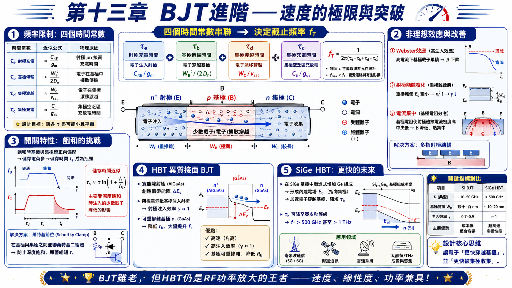
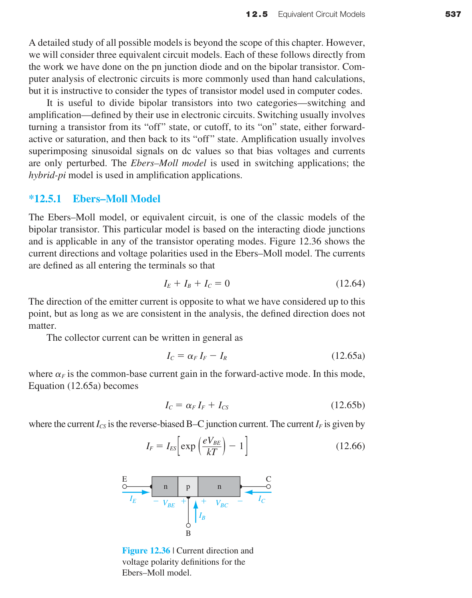
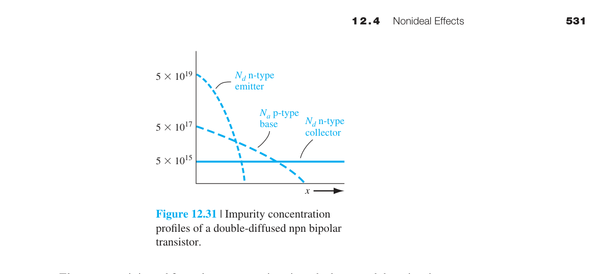

雙極性接面電晶體（BJT）—進階篇
第十二章基礎篇建立了 BJT 的直流模型（操作模式、電流增益、Early 效應）。本章在此基礎上深入三個實用面向：頻率響應（BJT 能跑多快？什麼限制了速度？）、開關行為（從 ON 到 OFF 需要多久？）、以及先進 BJT 技術（HBT、SiGe——現代 RF 電路的核心元件）。
如果第十二章基礎篇是「BJT 如何運作」，本章就是「BJT 在高速應用中會出什麼問題，以及如何克服」。$f_T$ 和 $f_{\max}$ 是衡量 BJT 速度的兩個關鍵指標，它們由四個物理時間常數決定——射極充電、基極傳輸、集極渡越、集極充電。理解這四個延遲成分是設計高速 BJT 的基礎。本章最具啟發性的概念是：BJT 的速度極限不在於載子速度本身，而在於充放電各種寄生電容所需的時間。
2. 高注入效應：n≈p → I_C ∝ e^{V_{BE}/2kT}（斜率減半）→ β 下降
3. 射極能隙窄化：重摻雜射極 → E_g↓ → n_{iE}↑ → γ↓
4. 電流集中（current crowding）：基極橫向電阻 → 射極邊緣電流密度最高
5. Ebers-Moll 模型：雙二極體+雙電流源，α_F I_{ES} = α_R I_{CS}（互易關係）
6. Gummel-Poon 模型：I_C ∝ e^{V_{BE}/kT}/Q_B——電荷控制，自然含高注入和 Early
7. Hybrid-Pi 小訊號：r_π=β/g_m、r_o=V_A/I_C、C_π=C_{je}+τ_F g_m、C_μ=C_{jc}
8. f_T = 1/(2πτ_{ec})，τ_{ec}=τ_E+τ_B+τ_C+τ_c——四個延遲成分
9. 開關時間 t_s≈τ ln(1+I_F/I_R)——飽和時基極儲存電荷需時間移除
10. SiGe HBT/Schottky-clamped BJT——先進結構：漂移電場加速、防止深度飽和

13.1 BJT 作用回顧與多邊結構
本章假設你已經熟悉第十二章基礎篇的基本 BJT 物理——npn/pnp 結構、順向主動模式、$\alpha=\gamma\cdot\alpha_T$、$\beta=\alpha/(1-\alpha)$、Ebers-Moll 模型。在此基礎上，本節介紹幾種實際積體電路中使用的變體結構。
多射極 BJT（Multi-Emitter BJT）
這是 TTL（Transistor-Transistor Logic，1970–1980 年代的主流數位邏輯家族）的輸入級結構。一個電晶體有多個獨立的射極，所有射極共用同一個基極和集極。哪一個射極被拉低（接地），哪一個射極就注入載子→電晶體導通。多射極結構使 TTL 能夠實現多輸入的邏輯閘（NAND、AND），同時節省晶片面積。
橫向 pnp（Lateral pnp）
標準的 npn BJT 是縱向結構——射極在頂部、基極在中間、集極在底部。載子垂直於晶圓表面流動。橫向 pnp 則不同——射極和集極在同一個平面上（兩側都是 p⁺ 擴散），載子平行於晶圓表面（橫向）流動。這種結構可以在標準 npn 製程中自然形成——不需要額外的光罩或製程步驟。

橫向 pnp 的缺點是 $\beta$ 較低（∼10–50），因為基極寬度由光罩間距決定（而非像縱向 npn 那樣由擴散深度決定→難以做到極窄）。但在 BiCMOS 電路中，它們提供了寶貴的互補元件——不需要複雜的額外製程就能得到 pnp 電晶體。
§12.5.1 Ebers-Moll 模型——雙二極體耦合等效電路 ⭐
Ebers-Moll 模型是 BJT 最經典的等效電路模型，由 J. J. Ebers 和 J. L. Moll 於 1954 年提出。它將 BJT 視為兩個互相耦合的 pn 接面二極體加上兩個受控電流源，簡潔地捕捉了 BJT 的核心行為。此模型的獨特優勢在於：適用於 BJT 的所有四種操作模式——順向主動、逆向主動、飽和、截止——因此特別適合用於開關電路分析和數位邏輯設計。
基本方程與符號約定
Ebers-Moll 模型定義所有端電流皆流入元件，因此滿足：
這與我們習慣的 npn 射極電流流出方向不同——但只要在分析中保持一致，方向定義並不影響結果。集極電流和射極電流的完整表達式為：
其中 $\alpha_F$ 是順向共基極電流增益，$\alpha_R$ 是逆向共基極電流增益（通常 $\alpha_R \ll \alpha_F$，因為逆向操作時集極的摻雜較低→注入效率差）。$I_{ES}$ 是 BE 接面逆向飽和電流，$I_{CS}$ 是 BC 接面逆向飽和電流。
互易關係——四個參數，三個獨立
Ebers-Moll 模型看似有四個參數（$\alpha_F, \alpha_R, I_{ES}, I_{CS}$），但實際上只有三個是獨立的。它們之間存在一個重要的互易關係（reciprocity relation）：
這個關係源自半導體物理的基本對稱性——pn 接面的電流-電壓關係必須滿足 Onsager 互易定理。它不僅減少了需要量測的獨立參數數量，也保證了模型在數學上的內部一致性。
傳輸型（Transport Version）Ebers-Moll
上述形式稱為「注入型」Ebers-Moll 模型。另一種更常用於電路模擬器的等價表示法是傳輸型（transport version）。傳輸型使用單一飽和電流 $I_S$，並定義兩個傳輸電流：$I_{CC} = I_S[\exp(eV_{BE}/kT)-1]$（順向傳輸電流）和 $I_{EC} = I_S[\exp(eV_{BC}/kT)-1]$（逆向傳輸電流）。集極和射極電流簡化為：
傳輸型的優勢在於只需要一個飽和電流參數 $I_S$，並且與 Gummel-Poon 模型自然對接——SPICE 內部實際上使用傳輸型表示。
四種操作模式下的 Ebers-Moll 行為
| 操作模式 | $V_{BE}$ | $V_{BC}$ | 主導項 |
|---|---|---|---|
| 順向主動 | >0 | <0 | $I_C \approx \alpha_F I_{ES}\,e^{V_{BE}/V_T}$，$I_E \approx -I_{ES}\,e^{V_{BE}/V_T}$ |
| 逆向主動 | <0 | >0 | $I_E \approx \alpha_R I_{CS}\,e^{V_{BC}/V_T}$，$I_C \approx -I_{CS}\,e^{V_{BC}/V_T}$ |
| 飽和 | >0 | >0 | 兩個接面皆順偏；$V_{CE}(sat) = V_{BE} - V_{BC}$ 約 0.1–0.2 V |
| 截止 | <0 | <0 | 兩個接面皆逆偏；$I_C, I_E \approx 0$（僅剩漏電流） |
飽和電壓 $V_{CE}(sat)$ 的解析解
從 Ebers-Moll 方程可以推導出飽和區的集極-射極電壓的解析表達式：
對於典型矽 npn BJT（$\alpha_F=0.99, \alpha_R=0.20, I_C=1$ mA, $I_B=50$ µA），$V_{CE}(sat) \approx 0.12$ V。由於對數函數的壓縮特性，$V_{CE}(sat)$ 對 $I_C$ 和 $I_B$ 的變化並不敏感——這與實驗觀測一致。
§12.6 BJT 的頻率限制——什麼決定了 BJT 能跑多快 ⭐
BJT 不是瞬間響應的。從射極電壓變化到集極電流變化，需要一段延遲——這就是射極-集極傳輸時間 $\tau_{ec}$。當信號頻率超過 $f_T = 1/(2\pi\tau_{ec})$ 時，BJT 不再能放大電流（電流增益降為 1）。
這四個時間常數各自代表一個物理過程——理解它們的來源和大小，就是理解如何設計高速 BJT：
① 射極充電時間 $\tau_e = r_e C_{je}$
$C_{je}$ 是 BE 接面電容（空乏層電容 + 擴散電容）。$r_e = V_T/I_E$ 是射極的小訊號電阻。$\tau_e = (V_T/I_E)C_{je}$——物理圖像是：要改變 $V_{BE}$，你必須先對 $C_{je}$ 充放電，而充放電的電流路徑經過 $r_e$。$\tau_e \propto 1/I_E$——射極電流越大，$\tau_e$ 越小。這就是為什麼高速 BJT 傾向操作在較高的偏壓電流。
② 基極傳輸時間 $\tau_b = W_B^2/(2D_B)$
這是最重要的時間常數——少數載子擴散跨越基極所需的平均時間。它來自擴散方程的解：一個粒子從 $x=0$ 擴散到 $x=W_B$ 的平均時間是 $W_B^2/(2D_B)$。
數值例子：$W_B=0.1$ µm，$D_B=30$ cm²/s→$\tau_b=(10^{-5})^2/(2\times30)=1.7\times10^{-12}$ s = 1.7 ps。單這個時間常數對應的 $f_T$ 約為 100 GHz。如果 $W_B=0.5$ µm→$\tau_b=42$ ps→$f_T$ 僅 ∼4 GHz。這就是為什麼所有高速 BJT 的首要設計目標就是縮小基極寬度。

③ 集極空乏層渡越時間 $\tau_d = x_d/(2v_{\text{sat}})$
電子穿過 BC 空乏區時，該區域電場極高→電子以飽和速度 $v_{\text{sat}}\approx10^7$ cm/s 運動。$x_d$ 是 BC 空乏區寬度（隨 $V_{CB}$ 增加）。$\tau_d = x_d/(2v_{\text{sat}})$——因子 1/2 來自平均（從 0 加速到 $v_{\text{sat}}$ 的過程）。$x_d=0.2$ µm→$\tau_d=0.2\times10^{-4}/(2\times10^7)=1$ ps。
④ 集極充電時間 $\tau_c = r_c C_{jc}$
$C_{jc}$ 是 BC 接面電容。$r_c$ 是集極串聯電阻（集極中性區的電阻）。這與 $\tau_e$ 對稱——充放電 BC 接面電容所需的時間。
⭐ $f_{\max}$——比 $f_T$ 更嚴格的指標
$f_T$ 只考慮電流增益，但對於功率放大器設計，更重要的是功率增益。$f_{\max}$（最大振盪頻率）是功率增益降至 1 的頻率：
$r_b$（基極電阻）和 $C_{jc}$（BC 接面電容）形成一個低通 RC 濾波器——訊號必須先對 $C_{jc}$ 充放電才能到達輸出。$r_b C_{jc}$ 時間常數限制了功率增益。
⭐ $f_\beta$——共射極電流的 3 dB 頻率
從混合-π 模型可以推導出共射極電流增益的頻率響應：
其中 $f_\beta$（beta 截止頻率）是 $|\beta|$ 降至 $\beta_0/\sqrt{2}$（即 −3 dB）時的頻率。$f_\beta$ 與 $f_T$ 的關係為：
這是一個非常重要的結果：$f_\beta$ 比 $f_T$ 低 $\beta_0$ 倍。例如，若 $f_T = 10$ GHz 且 $\beta_0 = 100$，則 $f_\beta$ 僅為 100 MHz——也就是說，在這個頻率以上，共射極電流增益就開始衰降了！這凸顯了 $f_T$ 作為「終極速度指標」的意義，但也提醒我們：實際電路中增益開始衰降的頻率遠低於 $f_T$。
$f_T$ 與 $f_\alpha$ 的關係
共基極電流增益 $\alpha$ 也有自己的截止頻率 $f_\alpha$（alpha 截止頻率）。由於 $\alpha_0 \approx 1$，$f_\alpha \approx f_T$。實際上：
這意味著共基極組態的頻率響應遠優於共射極組態——在需要極高頻率操作的應用中（如射頻前端），共基極或 Cascode 組態常常是更好的選擇。
現代 SiGe HBT 的數值例子
為了直觀感受這些數字，考慮一個現代 SiGe HBT 的典型參數：$W_B=20$ nm、$D_B=30$ cm²/s→$\tau_b = (2\times10^{-6})^2/(2\times30) \approx 0.07$ ps；$\tau_e \approx 0.1$ ps（高 $I_E$）、$\tau_d \approx 0.1$ ps、$\tau_c \approx 0.03$ ps→$\tau_{ec} \approx 0.3$ ps→$f_T \approx 1/(2\pi \times 0.3\times10^{-12}) \approx 530$ GHz。
若 $r_b=50$ Ω、$C_{jc}=5$ fF→$f_{\max} \approx \sqrt{530\times10^9/(8\pi\times50\times5\times10^{-15})} \approx 920$ GHz。這些數據說明了為什麼 SiGe HBT 能夠勝任毫米波 (30–300 GHz) 甚至太赫茲頻段的應用。
§12.7 大訊號開關特性——BJT 從 ON 到 OFF 的物理過程
在數位電路中，BJT 頻繁地在截止（OFF）和飽和（ON）之間切換。與小訊號放大不同，開關涉及大訊號變化——電流和電壓在全範圍內變化，少數載子分佈需要時間來建立和消除。開關速度受限於四個階段，每個階段對應不同的物理過程。
開關波形與四個時間參數
圖 12.43 展示了一個完整的 BJT 開關週期，從截止→飽和→截止。四個關鍵時間參數為：
| 參數 | 符號 | 定義 | 物理機制 |
|---|---|---|---|
| 延遲時間 | $t_d$ | $I_C$ 從 0 升至 10% 最終值 | BE 接面從逆偏轉為順偏——對 $C_{je}$ 充電 + 空乏區縮窄 |
| 上升時間 | $t_r$ | $I_C$ 從 10% 升至 90% 最終值 | 基極中少數載子濃度梯度逐步建立→$I_C$ 持續增長 |
| 儲存時間 | $t_s$ | 基極驅動反轉到 $I_C$ 降至 90% | ⭐ 最關鍵的延遲——移除飽和時儲存在基極和集極中的過量少數載子 |
| 下降時間 | $t_f$ | $I_C$ 從 90% 降至 10% | BC 接面恢復逆偏後，剩餘基極儲存電荷繼續被移除 |
儲存時間 $t_s$ 的物理根源
在飽和模式下，BE 和 BC 兩個接面都順偏→少數載子從兩側注入基極（電子從射極和集極同時注入基極）。這導致基極中存儲了遠多於順向主動模式的過量載子，如圖 12.44 所示。儲存電荷包含三個部分：$Q_B$（順向主動時的正常基極電荷）、$Q_{BX}$（飽和額外的基極電荷）、$Q_C$（集極中因 BC 接面順偏而注入的電荷）。
當基極驅動電壓反轉為負值時，反向基極電流開始抽取這些過量載子。但集極電流不會立即變化——因為 BC 接面仍然順偏，載子濃度梯度尚未改變。只有在 $Q_{BX}$ 和 $Q_C$ 被移除、BC 接面恢復逆偏之後，基極中的濃度梯度才會開始縮減→$I_C$ 開始下降。這就是儲存時間的物理本質。
儲存時間可以近似為：
其中 $\tau_s$ 是飽和區的等效少數載子壽命，$I_F$ 和 $I_R$ 分別是順向和反向基極驅動電流。$\tau_s$ 越大（BJT 的材料品質越好）→儲存時間越長——這是一個有趣的矛盾：好的 DC 特性（長壽命→高 $\beta$）與快的開關速度（短壽命→短 $t_s$）互相衝突。
蕭特基箝位電晶體（Schottky-Clamped Transistor）
防止 BJT 進入深度飽和的最經典方法是使用蕭特基箝位——在基極和集極之間並聯一個蕭特基二極體。蕭特基二極體的順向壓降（~0.3 V for Si）約為矽 pn 接面（~0.6–0.7 V）的一半。當 BJT 嘗試進入飽和、$V_{BC}$ 開始順偏時，蕭特基二極體在 $V_{BC} \approx 0.3$ V 就導通了→多餘的基極驅動電流被旁路（shunt）到集極，而非注入基極→$V_{CE}$ 被箝在約 0.3–0.4 V（而不是深度飽和的 ~0.1 V）。
效果是驚人的：BC 接面順偏電壓從 ~0.5 V 降至 ~0.3 V→過量少數載子濃度以指數關係減少（$\propto e^{V_{BC}/V_T}$）→降低超過三個數量級→儲存時間降至 1 ns 以下。這就是 74S/74LS 系列 TTL 邏輯（蕭特基 TTL）的核心創新。
Baker 箝位電路
Baker 箝位是蕭特基箝位的離散電路實現形式——使用一個蕭特基二極體和一個普通二極體的組合。在積體電路中，蕭特基二極體可以直接在 BJT 的基極-集極接觸區域形成（利用金屬-半導體接面），不需要額外的製程步驟。在離散電路中，Baker 箝位提供了一種使用外部蕭特基二極體來加速 BJT 開關的方法。Baker 箝位的原理與蕭特基箝位相同：限制 $V_{BC}$ 的順偏程度，防止基極中的過量電荷累積。
§12.5.3 混合-π（Hybrid-Pi）小訊號等效電路

當 BJT 工作於線性放大器（順向主動模式，疊加小訊號於直流偏壓上），我們需要一個小訊號等效電路來分析增益、輸入阻抗和頻率響應。混合-π（Hybrid-Pi）模型就是為此設計的——它將 BJT 的非線性直流特性在操作點附近線性化，並加入電容元件來捕捉高頻行為。
核心小訊號參數
混合-π 模型的每一個元件都對應一個明確的物理機制：
① 跨導 $g_m$（transconductance）：定義為集極電流對 BE 電壓的導數，是 BJT 放大能力的核心度量。
在室溫下 $V_T \approx 26$ mV→$g_m = I_C/0.026$。對於 $I_C=1$ mA，$g_m \approx 38.5$ mS（毫西門子）。這遠大於相同電流下的 MOSFET 跨導——這是 BJT 在高頻應用中的核心優勢之一。
② 輸入電阻 $r_\pi$：小訊號基極-射極電阻，來自 BE 接面的動態電阻。
這是 $\beta_0$（低頻共射極電流增益）和 $g_m$ 之間的橋樑。對於 $\beta_0=100$、$I_C=1$ mA→$r_\pi = 100/0.0385 \approx 2.6$ kΩ。
③ 輸出電阻 $r_o$：來自 Early 效應——$V_{CE}$ 增加→集極電流微幅增加。
其中 $V_A$ 是 Early 電壓（典型值 50–200 V）。$r_o$ 通常在數十至數百 kΩ 範圍。$r_o$ 限制了 BJT 放大器能達到的最大電壓增益。
④ 輸入電容 $C_\pi$：BE 接面的總等效電容，是頻率響應的首要限制因素。
$C_{je}$ 是 BE 空乏層電容（~0.1–1 pF，與 $V_{BE}$ 相關），$\tau_F g_m$ 是擴散電容（$= g_m \cdot W_B^2/2D_B$，$\propto I_C$）。在順向偏壓下，擴散電容通常主導——$I_C=1$ mA 時 $\tau_F g_m$ 可達數 pF。擴散電容的存在意味著：要讓 $V_{BE}$ 改變，你必須同時改變基極中儲存的少數載子電荷——這是 BJT 速度的根本物理限制。
⑤ 回授電容 $C_\mu$（Miller 電容）：BC 接面電容，將輸出信號耦合回輸入。
$C_\mu$ 雖然數值小（~0.01–0.5 pF），但由於 Miller 效應，它在輸入端的等效電容被放大為 $C_\mu(1+g_m R_L)$——當負載電阻 $R_L$ 較大時，這個放大倍數可能達到 10–100 倍！因此 $C_\mu$ 往往是限制共射極放大器高頻增益的關鍵瓶頸。高速 BJT 設計的一個重要目標就是最小化 $C_{jc}$（小面積集極、高 $V_{CB}$ 偏壓、低摻雜集極）。
完整混合-π 等效電路結構
完整的混合-π 模型將上述元件組合，並加入寄生的串聯電阻：$r_b$（基極串聯電阻——來自基極窄區域的橫向歐姆電阻，典型值 10–500 Ω）、$r_c$（集極串聯電阻——集極磊晶層和埋層的電阻，~10–100 Ω）、$r_{ex}$（射極串聯電阻，~1–5 Ω）。在計算機模擬中，這些寄生電阻在高頻時扮演重要角色——特別是在功率放大器中，$r_b$ 直接影響 $f_{\max}$。
三大模型比較——何時使用哪個？
| 模型 | 適用場景 | 涵蓋的物理效應 | 限制 |
|---|---|---|---|
| Ebers-Moll | 直流偏壓計算、大訊號開關分析 | 四種操作模式、飽和電壓 | 假設 $\alpha_F, \alpha_R$ 為常數；無 Early 效應、無高注入 |
| Gummel-Poon | SPICE 模擬、包含非理想效應的直流/暫態分析 | Early 效應、高注入效應、非均勻基極摻雜、電荷存儲 | 無 Kirk 效應、無自發熱、無準飽和 |
| Hybrid-Pi | 小訊號 AC 分析、頻率響應、放大器設計 | 線性增益、輸入/輸出阻抗、頻率響應、Miller 效應 | 僅在操作點附近線性化；不適用於大訊號切換 |
§12.5.2 Gummel-Poon 模型——積分電荷控制

Ebers-Moll 模型（前一節）用兩個互相耦合的二極體和兩個受控電流源來描述 BJT。它在大多數情況下夠用，但有一個重要限制：它假設 $\alpha_F$ 和 $\alpha_R$ 是常數——不隨電流或電壓變化。現實中，$\beta$ 隨 $I_C$ 變化很大（低電流時復合損失主導、高電流時高注入效應主導），且 $V_{CB}$ 變化會透過 Early 效應調變集極電流。
電荷控制方程——Gummel-Poon 的核心
Gummel-Poon 模型的核心創新是引入積分電荷控制關係（integral charge-control relation）。傳輸電流不是由接面電壓直接決定，而是由基極中的總多數載子電荷（Gummel 數）$Q_B$ 決定。對於 npn BJT：
其中 $Q_B = \int_0^{x_B} p(x)\,dx$ 是基極中總電洞電荷的積分，$Q_{B0}$ 是零偏壓時的基極電荷。$Q_B$ 不是常數——當 $V_{CB}$ 增加時，BC 空乏區展寬→中性基極變窄→$Q_B$ 減小→$I_C$ 增加（這就是 Early 效應的自然納入！）；當 $V_{BE}$ 過大時，注入的過量少數載子濃度接近基極多數載子濃度→$p$ 增加以維持電中性→$Q_B$ 增加→$I_C$ 增長減緩（這就是高注入效應的自然納入！）。
基極電荷分區——模型的擴展性
在完整的 Gummel-Poon 模型中，總基極電荷被分解為幾個物理成分：
其中 $Q_{B0}$ 為零偏壓基極電荷；$C_{je}V_{BE}$ 和 $C_{jc}V_{BC}$ 代表 BE 和 BC 空乏層電容的充電電荷；$\tau_F I_{TF}$ 和 $\tau_R I_{TR}$ 則代表順向和逆向傳輸相關的擴散電荷（少數載子儲存在基極中的電荷）。這種電荷分區使 Gummel-Poon 模型能夠自然地包含 Early 效應、高注入效應（Webster 效應）和 Kirk 效應——這些都是 Ebers-Moll 模型需要外加修正項才能處理的。
Gummel-Poon 與 Ebers-Moll 的關係
可以證明，當 $Q_B = Q_{B0}$（零偏壓基極電荷）且忽略所有非理想效應時，Gummel-Poon 模型退化為傳輸型 Ebers-Moll 模型。Gummel-Poon 的額外複雜性來自於它允許 $Q_B$ 隨偏壓動態變化。這也是為什麼所有現代 SPICE 電路模擬器中的 BJT 模型（包括 VBIC、MEXTRAM、HICUM 等）都以 Gummel-Poon 的電荷控制框架為基礎。工程師從 Gummel plot（$\log I_C$ 和 $\log I_B$ vs $V_{BE}$）中提取 $I_S$、$\beta_F$、$\beta_R$、$V_A$（Early 電壓）和 $\tau_F$（順向傳輸時間）等參數→灌入 SPICE→精確模擬電路行為。
12.4 BJT 非理想效應——詳細分析
第十二章基礎篇已介紹了基極寬度調變（Early 效應）。本節補充三個在高電流和高壓操作下的重要非理想效應。
12.4.2 高注入效應（Webster Effect）
順向主動模式下，$I_C = I_S e^{V_{BE}/V_T}$ 在低電流時成立。當 $V_{BE}$ 增大到使注入基極的少數載子濃度 $\delta n_B$ 接近基極多數載子濃度 $p_{B0}$ 時，電中性條件要求 $p$ 也必須增加（$p = p_{B0} + \delta n_B$）→有效摻雜濃度增大→$I_S$ 的表觀值增大→$\beta$ 在高電流時下降。這稱為 Webster 效應。
在 Gummel plot 中，$\log I_C$ vs $V_{BE}$ 曲線在高 $V_{BE}$ 處開始偏離直線（斜率降低）——這就是高注入的實驗特徵。
12.4.3 射極能隙窄化（Emitter Bandgap Narrowing）
當射極摻雜濃度 $N_E$ 超過 $\sim10^{18}$ cm$^{-3}$ 時，重摻雜帶來兩個效應：① 雜質能帶形成（impurity band）→禁帶寬度 $E_g$ 縮小。② 多體效應（exchange-correlation）→進一步縮小 $E_g$。
能隙窄化的直接後果：$n_i^2 \propto e^{-E_g/kT}$→$E_g$ 縮小→$n_i^2$ 增大→射極中的少數載子（電洞）濃度增大→注入射極的電洞電流 $I_{pE}$ 增大→$\gamma$ 下降→$\beta$ 下降。
這就是為什麼射極摻雜不能無限提高——超過 $\sim5\times10^{19}$ cm$^{-3}$ 後，$\beta$ 反而下降。最佳射極摻雜通常在 $10^{18}$–$10^{19}$ cm$^{-3}$ 之間。
12.4.4 電流集中（Current Crowding）
基極電流 $I_B$ 從基極接觸橫向流過基區到達基極-射極接面下方。基區有歐姆電阻 $r_b$（基極擴散電阻）→$I_B$ 在 $r_b$ 上產生壓降→射極邊緣的實際 $V_{BE}$ 高於射極中央的 $V_{BE}$→射極邊緣注入更多電流。
結果：射極電流集中在邊緣，中央部分貢獻較少。在高 $I_C$ 下，邊緣的 $V_{BE}$ 最高→先進入高注入→$\beta$ 先下降。這使有效射極面積小於幾何面積→$g_m$ 低於預期。
§12.8 先進 BJT 結構——多晶矽射極、SiGe 基極、HBT
第十章討論的 BJT 是同質接面（Si 射極/Si 基極/Si 集極）。隨著半導體製程的演進，三種先進結構顯著提升了 BJT 的性能：多晶矽射極 BJT（提升 $\beta$ 且實現淺射極接面）、SiGe 基極電晶體（內建加速電場→降低 $\tau_b$）、以及異質接面雙極性電晶體 HBT（寬能隙射極→突破 $\gamma$ 的限制）。
12.8.1 多晶矽射極 BJT（Polysilicon Emitter BJT）
現代積體電路中的 BJT 射極通常不是單晶矽，而是多晶矽（polysilicon）。圖 12.46 展示了這種結構的截面：在 p 型基極之上有一層極薄的 n⁺ 單晶矽，上面覆蓋 n⁺ 多晶矽。這個看似簡單的改變帶來了兩個關鍵優勢：
① 電流增益提升：多晶矽中的載子遷移率遠低於單晶矽（晶界散射）→多晶矽中的少數載子擴散係數 $D_{E(poly)}$ 很小。從基極注入射極的電洞在多晶矽/單晶矽介面處遇到「擴散瓶頸」——濃度梯度在單晶矽側被壓縮（如圖 12.47 所示）→注入射極的電洞電流 $I_{pE}$ 減小→射極注入效率 $\gamma$ 提高→$\beta$ 增大。這意味著可以實現更淺的射極接面（減少寄生電容）而不犧牲 $\beta$。
② 淺射極接面：多晶矽可以作為擴散源——雜質從多晶矽擴散進入下方單晶矽，形成極淺（~10–50 nm）的射極接面。淺接面→較小的 $C_{je}$→較短的 $\tau_e$→較高的 $f_T$。
多晶矽射極 BJT 是現代 BiCMOS 技術中 BJT 結構的標準配置——它使 BJT 能夠與先進 CMOS 製程相容，同時保持優異的類比性能。
12.8.2 SiGe 基極電晶體——矽基高速的王者
SiGe HBT 是目前商用頻率最高的矽基元件：$f_T$ 達 300–500 GHz，$f_{\max}$ 達 500–800 GHz。關鍵創新是基極中漸進的 Ge 組成。
將 Ge 摻入 Si 基極會縮小能隙 $E_g$（Si: 1.12 eV → SiGe: 可低至 ~0.8 eV，取決於 Ge 含量）。Ge 含量從射極端（最少）向集極端（最多）漸進增加→能隙漸進縮小→導帶邊緣形成一個內建準電場（quasi-electric field）——這個電場的方向是從射極指向集極，強度可達 $10^3$–$10^4$ V/cm。注入基極的電子在擴散的同時被這個電場加速推向集極→基極傳輸時間 $\tau_b$ 降至亞皮秒級。

SiGe HBT 的其他優勢：能隙縮小還使集極電流增大（$n_i^2$ 增加），而基極電流主要由 BE 接面參數決定→$\beta$ 提升約 4 倍（對於 100 meV 能隙縮小）；Early 電壓 $V_A$ 也因能隙漸變效應而增大約 12 倍（100 meV 能隙縮小）；$\tau_e$ 減小（因為 $I_E$ 增大而 $r_e \propto 1/I_E$）。所有這些效應共同作用，使 SiGe HBT 成為毫米波和太赫茲應用的首選元件。SiGe HBT 是手機 RF 前端、光纖通訊驅動器（100 Gbps）、汽車雷達（77 GHz）的主力元件。
12.8.3 異質接面雙極性電晶體（HBT）——寬能隙射極的革命
同質接面 BJT 的根本矛盾在於：要提高 $\beta$→需要提高 $\gamma$→需要 $N_E \gg N_B$→但 $N_E$ 不能無限提高（重摻雜→能隙縮小→$\gamma$ 反而下降）。HBT 用材料工程突破了這個限制。
HBT 的核心思想是用一個寬能隙材料作為射極（如 AlGaAs、InGaP），基極和集極使用窄能隙材料（如 GaAs）。寬能隙射極在價帶處產生一個大的能障 $V_h$→阻止電洞從基極注入射極→$I_{pE}$ 幾乎消失→$\gamma \approx 1$，即使射極摻雜不必高於基極。這使設計者可以重摻雜基極（降低 $r_b$→提升 $f_{\max}$）、輕摻雜射極（降低 $C_{je}$→提升 $f_T$）——同時實現高 $\beta$、高 $f_T$、和高 $f_{\max}$。
III-V HBT 的優勢：除了寬能隙射極的注入效率優勢，GaAs 中的電子遷移率約為矽的 5 倍→GaAs HBT 的基極傳輸時間 $\tau_b$ 大幅縮短。實驗中，基極寬度 0.1 µm 的 AlGaAs/GaAs HBT 已實現 $f_T \approx 40$ GHz（1980 年代數據；現代 InP HBT 的 $f_T$ 可達 500–800 GHz）。主要的權衡在於 GaAs 的少數載子壽命較短→BE 接面復合電流較大→$\delta$（復合因子）下降，但透過窄基極設計，仍可實現 $\beta \approx 150$。
本章摘要
- Ebers-Moll 模型：雙二極體+雙電流源模型，適用於四種操作模式。$\alpha_F I_{ES} = \alpha_R I_{CS}$（互易關係）。傳輸型使用單一 $I_S$。最適合 DC 偏壓和開關分析。
- Gummel-Poon 模型：積分電荷控制——$I_C$ 由基極總電荷 $Q_B$ 決定。$Q_B$ 隨偏壓動態變化→自然納入 Early 效應和高注入效應。所有 SPICE BJT 模型的基礎。
- Hybrid-Pi 模型：小訊號線性化等效電路。$g_m=I_C/V_T$、$r_\pi=\beta_0/g_m$、$r_o=V_A/I_C$、$C_\pi=C_{je}+\tau_F g_m$、$C_\mu=C_{jc}$。Ebers-Moll/Gummel-Poon 用於 DC 和暫態，Hybrid-Pi 用於 AC 頻率響應。
- $f_T$ 的四個時間常數：$\tau_e=r_e C_{je}$、$\tau_b=W_B^2/(2D_B)$（⭐ 設計焦點）、$\tau_d=x_d/(2v_{\text{sat}})$、$\tau_c=r_c C_{jc}$。$f_T = 1/(2\pi\tau_{ec})$。
- $f_\beta = f_T/\beta_0$：共射極增益的 −3 dB 頻率——比 $f_T$ 低 $\beta_0$ 倍。$f_\alpha \approx f_T$→共基極組態頻率響應遠優於共射極。
- $f_{\max}=\sqrt{f_T/(8\pi r_b C_{jc})}$：功率增益的頻率上限。$r_b C_{jc}$ 時間常數是瓶頸。$f_{\max}>f_T$ 是常見的。
- BJT 開關四個階段：$t_d$（延遲）、$t_r$（上升）、$t_s$（⭐ 儲存時間——飽和→截止的關鍵限制）、$t_f$（下降）。$t_s \approx \tau_s\ln[(I_F+I_R)/I_R]$。
- 蕭特基箝位與 Baker 箝位：蕭特基二極體並聯基極-集極→限制 $V_{BC}$ 順偏程度→過量少數載子呈指數衰減→$t_s$ 降至 <1 ns。74S/74LS TTL 的核心。
- 多晶矽射極 BJT：多晶矽中的低擴散係數→壓縮濃度梯度→降低 $I_{pE}$→提升 $\beta$。同時實現淺射極接面→小 $C_{je}$。
- SiGe HBT：漸進 Ge 組成→內建加速電場→$\tau_b$ 降至亞皮秒→$f_T>500$ GHz。同時提升 $\beta$（~4×）和 $V_A$（~12×）。
- III-V HBT：寬能隙射極→$\gamma\approx1$→可重摻雜基極（降 $r_b$）+ 輕摻雜射極（降 $C_{je}$）。AlGaAs/GaAs、InGaP/GaAs、InP HBT 涵蓋從手機到太赫茲的應用。
本章學習資源
第 12 章進階公式摘要 · 可驗算補充習題 · 章內例題
推導、假設與章末診斷
高頻與開關模型的假設
- Hybrid-π 是工作點附近的一階小訊號線性化；振幅必須小到 $g_m,r_\pi,C_\pi$ 可視為常數。
- 準靜態模型要求內部電荷能跟隨端電壓；接近渡越時間極限時需分布式或非準靜態模型。
- $f_T=1/(2\pi\sum\tau_i)$ 假設主要延遲可串接相加；寄生互耦可能使實際響應更複雜。
- 儲存時間 $t_s\approx Q_s/I_R$ 假設反向抽取電流近似常數且復合在抽取期間可忽略。
中間推導：$f_T$ 與儲存時間
- 小訊號電流增益可寫成 $\beta(\omega)\approx\beta_0/(1+j\omega\tau_\beta)$。
- 電流增益幅值降至 1 的頻率定義為 $f_T$；以總射極至集極延遲 $\tau_{ec}$ 表示，$f_T\approx1/(2\pi\tau_{ec})$。
- $\tau_{ec}=\tau_e+\tau_b+\tau_d+\tau_c$，其中 $\tau_b=W_B^2/(2D_B)$。
- 飽和關斷先以反向基極電流移除 $Q_s$，故最低量級 $t_s\sim Q_s/|I_{B,R}|$。
章末練習與概念診斷
$f_T$ 與 $f_{max}$ 有何不同？
$f_T$ 是短路電流增益降為 1；$f_{max}$ 是單向功率增益降為 1，還強烈受基極電阻與集極電容限制。
蕭特基箝位為何能加速 BJT 關斷？
它避免 BC 接面深度順偏，減少飽和儲存電荷，因此縮短 $t_s$。
延伸計算練習
完成上方診斷後，請在不查公式的情況下重建代表推導，並改變一個參數檢查極限行為。更多含數值與解答的題目：本章完整習題頁。